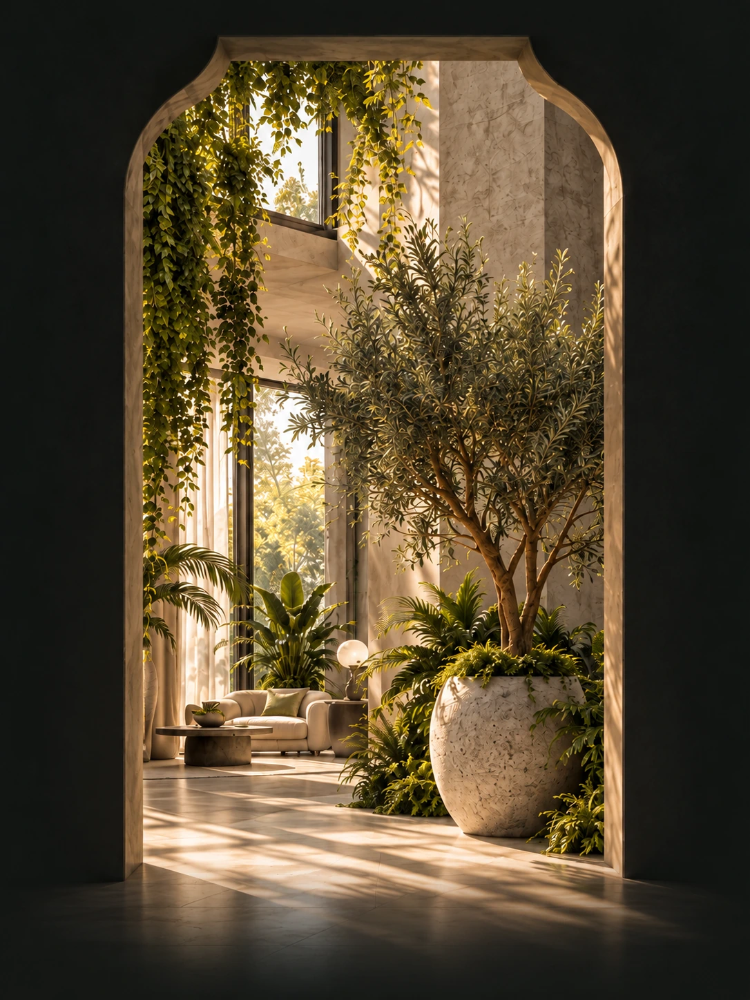
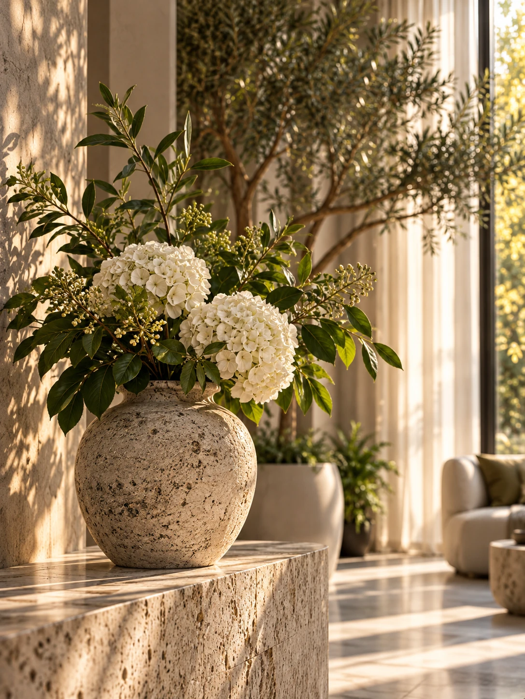
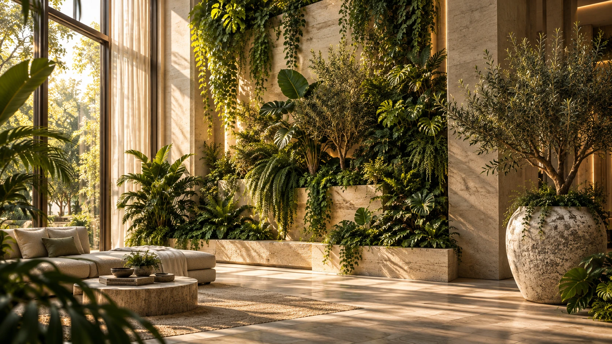
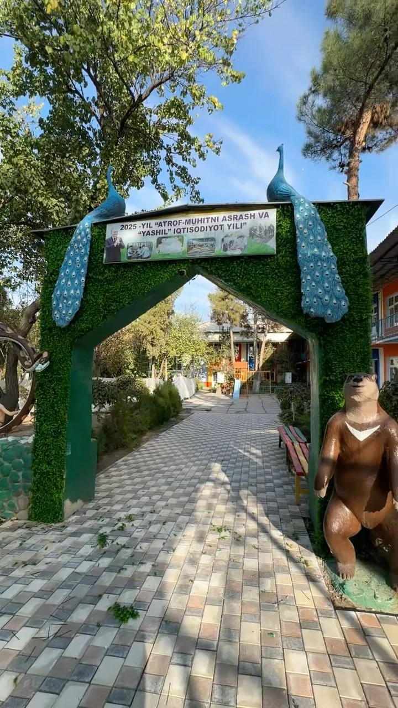
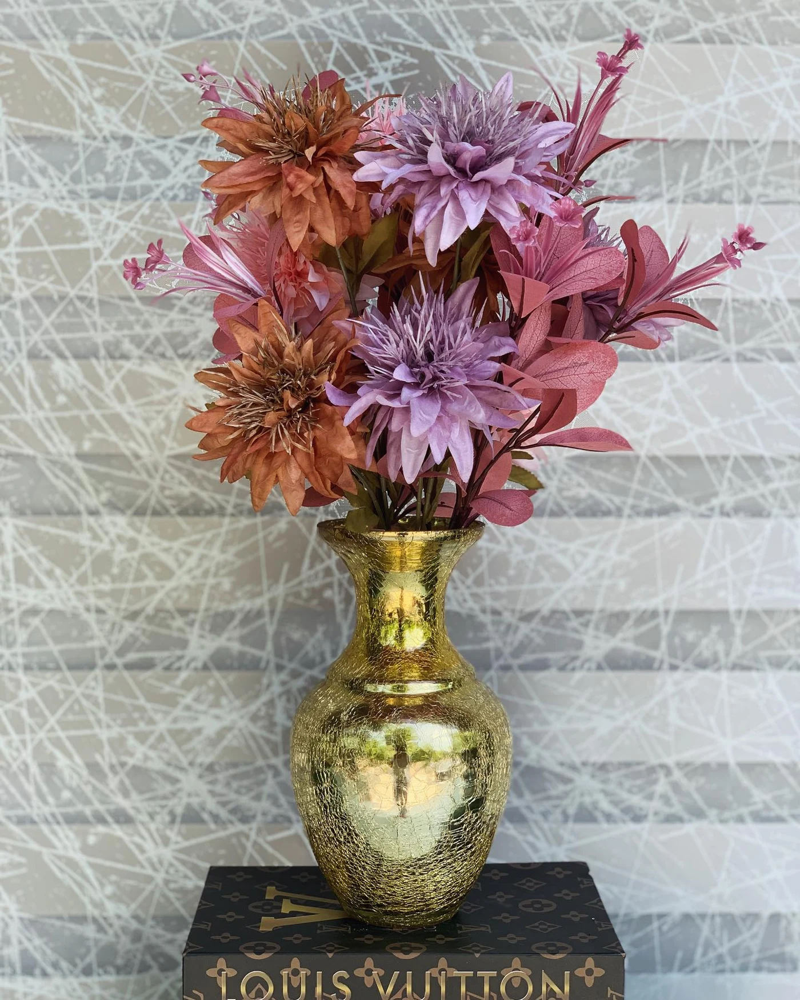

В розницу и оптом
Выберите готовую композицию для себя или обсудите заказ для пространства. Ассортимент и условия оптового обращения уточняются с шоурумом.

Масштаб комнаты
Искусственные растения, композиции с вазами и декоративная зелень для вашего интерьера.
Найти своё направлениеМасштаб предмета
Цветочная композиция на столе, выразительная ваза или зелень у окна. Начните с детали, которая связывает интерьер воедино.
Композиции, вазы и аксессуары
В шоуруме представлены готовые композиции с вазами и кашпо разных цветов и дизайнов. Наличие и сочетания можно обсудить с DecoFlowers.

Масштаб пространства
Вертикальные фитостены, искусственные деревья и озеленение интерьера под ключ — для дома, офиса, кафе или ресторана.
Обсудить пространствоЦветы · растения · предметы
Шесть направлений DecoFlowers. Раскройте нужное, чтобы понять, с чего начать разговор.

Искусственные цветы и растения в вазах и кашпо. Готовые композиции помогают подобрать сочетание формы, цвета и объёма без поиска каждого предмета отдельно.
Уточнить ассортимент
Крупная зелень для выразительного акцента в комнате. В публикациях бренда представлены искусственные деревья для дома, офиса, магазина и клиники.
Подобрать дерево
Для самостоятельного акцента и оформления пространства. DecoFlowers предлагает искусственную зелень для интерьеров, кафе, ресторанов, офисов и дачных участков.
Обсудить зелень
Форма сосуда меняет характер всей композиции. В шоуруме — вазы и кашпо разных цветов и дизайнов; доступные сочетания уточняются при обращении.
Подобрать сочетание
Декоративная зелень в масштабе стены. Расскажите о помещении, поверхности и желаемом впечатлении — детали оформления обсуждаются с DecoFlowers.
Обсудить фитостену
Книги, вазы и декоративные предметы, которые дополняют цветы и зелень. Посмотрите актуальные публикации или спросите, что сейчас представлено в шоуруме.
Посмотреть InstagramОформление DecoFlowers
Зелёные акценты в интерьерах, оформление входных групп и готовые цветочные композиции. Посмотрите, как они меняют окружение.

DecoFlowers · Ташкент
Цветы, растения, вазы, книги и готовые композиции — в одном пространстве. Здесь можно рассмотреть оттенки и собрать своё сочетание.
Ташкент, массив Аль-Хорезми-1, 9. Позвоните, чтобы согласовать время посещения.
Позвонить в шоурумПосмотреть страницу брендаДля личного интерьера и бизнеса
Выберите готовую композицию для себя или обсудите заказ для пространства. Ассортимент и условия оптового обращения уточняются с шоурумом.
Бренд сообщает о доставке по всей Республике Узбекистан. Для вашего города согласуйте состав заказа, доступность и условия доставки.
DecoFlowers предлагает озеленение интерьера под ключ. Расскажите о назначении помещения и масштабе задачи, чтобы начать предметный разговор.
Перед первым разговором
Фотографию пространства, примерные размеры и желаемый характер интерьера. Если выбираете готовую композицию, начните с места, где она будет стоять, и палитры комнаты.
Здесь показаны направления, а не каталог доступных товаров. Точную цену, наличие, размер и комплектацию композиции уточните непосредственно у DecoFlowers.
Позвоните или напишите в официальную страницу Instagram. Можно подготовить запрос ниже: он сохранится как редактируемый текст, который вы самостоятельно передадите бренду.
Начнём с вашего пространства
Композиция, зелёный акцент
или интерьер целиком —
расскажите о своей идее.